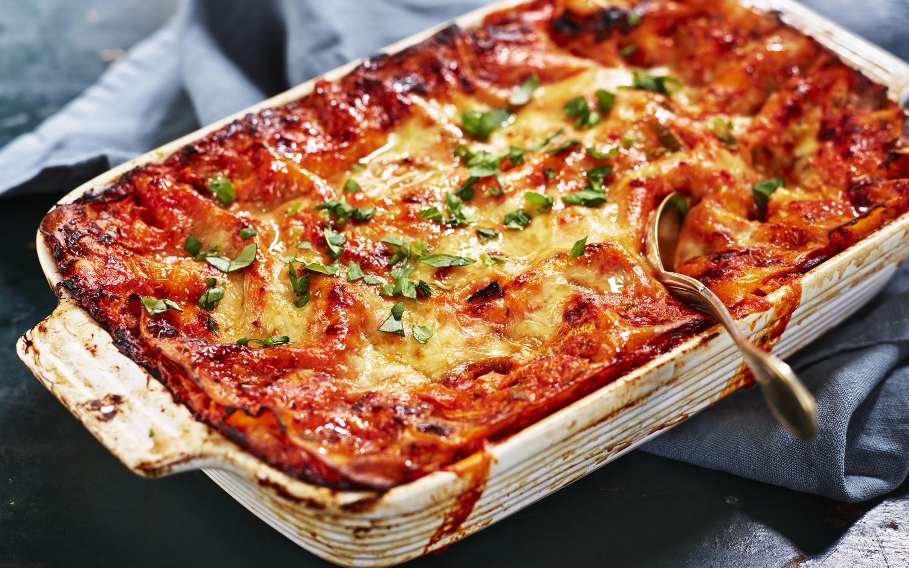

Tillbaka hem
Vegetarisk Lasagne
En klassisk italiensk rätt med köttfärssås och pasta.
Perfekt
till vardagsmiddagen!

Ingredienser
Lasagneplattor
Zucchini, paprika & lök
Krossade tomater, tomatpuré & kryddor
Ostsås (mjölk, ost, smör, mjöl)
Gör så här
Hacka grönsakerna.
Stek lök, zucchini & paprika.
Tillsätt krossade tomater, tomatpuré & kryddor.
Koka ihop en ostsås.
Varva lasagneplattor, grönsaksröra & ostsås i en form.
Gratinera i ugnen tills lasagnen är genomlagad & gyllene.
Kalorier
Ingrediens
Kalorier
Lasagneplattor (250 g)
900 kcal
Grönsaker (ca 500 g)
150 kcal
Krossade tomater & tomatpuré
150 kcal
Ostsås (mjölk, ost, smör, mjöl)
800 kcal
Lämna en kommentar
Namn:
Kommentar: